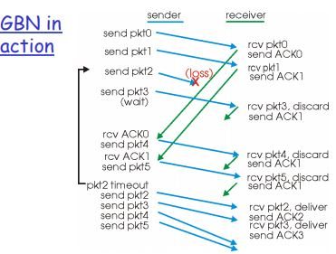
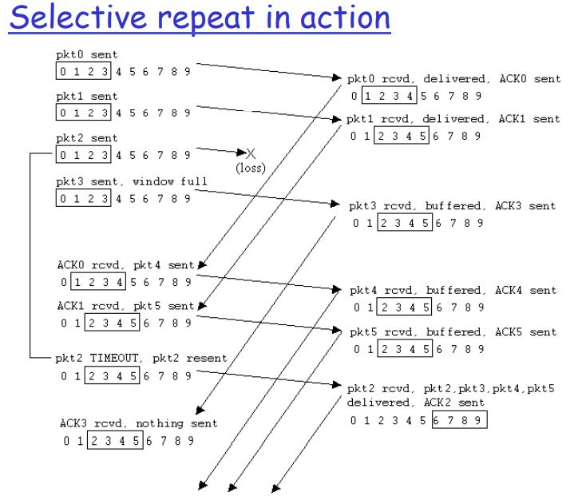

Application layer Notes
Transport Layer Notes
General notes, google drive
Network fundamentals - PDF 1
Hosts = end systems , running network apps
Transmission rate = bandwidth
routers forward packets

Protocol - "set of
rules governing the exchange or
transmission of data between
devices " - specify the format of each type of message
Network edge - applications and Hosts
network core - interconnected routers, network of networks
Client Server Model - web browsers, email
peer-peer model - skype, BitTorrent
dial up modem - old technology that uses existing telephony infrastructure - 56Kb/s direct
access. can
only 1 (phone/web) at any time
Digital Subscriber Line ( DSL ) - the telephone infrastructure (3.3 Mb/s upload (1Mb/s actually),
24Mb/s
down ( 8Mb/s Actually))
Residential Cable modems - TV infrastructure (HFC hybrid fibre coax uses FDM) provides
asymmetric high down
slower up speeds - attaches to ISP router (Head-end)
fibre to the home - carries TV and phone services has very high internet rates
Wireless access network - 802.11g (54Mb/s) , 802.11n(150Mb/s) connection via access point
guided media - signals propagate inside a wire
unguided media - signal propagate freely like radio waves or WiFi
Twisted Pair (TP) - two insulated copper wires | category : 3 (10Mb/s) 5 (100Mb/s) 6(1Gb/s)
Coaxial cable - two concentric copper conductors, its bidirectional , Broadband multiple
channels on
cable , HFC
fibre optic cable - glass fibre that carries light pulses, high speed operation and transmission,
low
error rate
- FDM ( radio / TV ) - frequency division multiplexing: bandwidth is split into parts ( non-overlapping bands ) each carries a separate signal
- TDM ( telephone ) - Time-division multiplexing: each signal appears only a fraction of the time
- Circuit switching - network resources divided into pieces, allocated to calls, not for sharing
- Packet switching - Statistical multiplexing : allocates resources to channels currently transmitting
Internet uses packet switching because it can support a lot more users, it shares the resources fairly (
statistical multiplexing), if you are luck and are the only person using the link, you get the full
capacity
it is great for bursty data, however it needs protocols to avoid packet loss ( occurs as congestion
happens when too many users use the internet)
Internet is roughly hierarchial (network of networks). There is a Tier 1 ISP (big), Tier 2 (reginal ISP),
Tier 3 ( local ISP)
because of this a packet may pass through a series of local, regional and big networks.
How packets might get lost
packets queue at routers (to be sent), the queue can only hold a finite number of packets as it
processes them, if too many
packets arrive than the router can handle, some will have to be dropped as there is no where to hold
them.
Throughput - rate at which bits are transferred between sender/receiver
bottleneck - slowest link on a series of links on a packet path
-
4 sources of packet delay
- Nodal processing - checking bit errors and determine output link
- Queueing delay - waiting for output link transmission
- Transmission delay - L/R time it takes to send a packet over a link
- Propagation delay - physical limits of links propagation delay - distance/speed
Encapsulation - as the data travels down through the network layers each layer adds it own header

Application Layer - PDF 2
Communication between Proxy server/client/internet
- Principles of network applications
Every computer on the internet get a unique IP address
Client-server - data centers / cloud computing : the server is always on with a permanent IP address, clients connect only intermittently and clients do not communicate directly with each other
peer-to-peer (P2P) - arbitrary end systems directly communicate they only connect every now and then and change IP, apps with P2P run both client and server processes
Hybrid of client-server and P2P - Skype or instant messaging (P2P when chatting, but centralized control of IP distribution)A socket is one endpoint of a two-way communication link between two programs running on the network. A socket is bound to a port number so that the TCP layer can identify the application that data is destined to be sent to.
- Web and HTTP
HyperText Transfer Protocol - client/server model , stateless and uses TCP
round trip time (RTT) - to from client to server and back -- 2 X PD
Non-persistent HTTP - only 1 object is sent over a TCP connection, each time you must open and close a connection for each html object
Persistent HTTP - multiple objects sent over a TCP connectionmessage format :
GET /index.html HTTP/1.1
Host: www.ucc.ie
User-agent: Mozilla/4.0
Connection: close
Accept-language:en
This is a GET request message format,after "GET" (request line) are a series of 'Header lines' and carriage return indicates end of message
Status codes - 200 (ok) , 301 (moved permanently) , 400 (bad Request), 505 ( HTTP version not supported)
Web caches ( proxy servers ) - All requests go through a proxy server - the proxy server keeps copies of websites and only checks with original server if the copy is still valid this reduces the strain on the network and can provide higher speeds as the proxy server is usually closer to the clients than original server
it also enables poor content providers to effectively deliver as they only need to send 1 copy that is then stored
- FTP - file transfer protocol
Port 21 , TCP is used, One TCP for commands to the FTP server and another TCP for sending the file. The FTP server maintains state like the current directory and earlier authentication, theres predefined commands and return codes. It just gets the file and doesn't process anything. HTTP gets the 'file' (object) and processes it.
- Electronic mail ( SMTP , POP3 , IMAP )
SMTP - Simple Mail Transfer Protocol, its a push protocol, uses persistent connection, uses ASCII
POP3 - post office protocol 3 - "store and forward" service, mail is kept on the server and whenever possible it is downloaded by the client then deleted off the server, it is stateless
IMAP - internet Message Access Protocol, works by relying on the server to send and receive messages, best for people that use a lot of PC and devices. Messages are only kept on the server. Keeps state across sessions with folder organization - DNS - Domain Name system : Root DNS, com DNS servers, org DNS servers... , individual website servers
- File distribution ( P2P , CDN , DASH (video))
First approach - mirror sites , a files are copied across multiple servers and a user selects a mirror to download it from. this can cause issues like file consistency or overloading one server. solution: CDN - Content distribution Network - automates mirror sites - theres many servers with the files and when you click download the CDN does the work of picking the best suitable mirror site. it automates file consistency. its organised as Overlay network.
Pure P2P Architecture - no always on server - only arbitrary end systems that communicate directly, everyone changes addresses. The more peers the faster the download and reduced stress on individual nodes ( or server if comparing with client/server models)
theres rewards for seeding the file, everyone helps everyone download the file.BitTorrent - theres a list of file pieces and who has them, your ask for rarest first. Periodically peers inform each other about their highest sending peer, and thus that person will get better partners and get the file faster.
Tracking - it used a centralised tracker node (vulnerable), also privacy issues as tracker knew all peers
Gnutella - flooding approach , lookup request was delivered hop-by-hop to every node in the network , very big overhead and possibly slow.
Distributed Tracker - what bit torrent uses , scalable queries when the data is spread over a large number of peers, it is implemented as a DHT (Distributed hash table).
DHT - maps keys to values like (content name, ip Address) . so users can lookup(key) to get the IP address. Each peer may only know about a small number of peers, this method is safer and peers can leave and enter whenever as DHTs are quickly spreadDHT circular design can also be implemented with shortcuts where each peer has successor, predecessor and short cut address.
to handle peer churn - we require to know the address of its next 2 successors, incase that nodes leaves.Streaming Stored Video - problems, once a user starts playing you want to match the timing to avoid buffering. You need to respect clients memory capacity, so you cannot buffer too much or too little.
DASH - Dynamic Adaptive Streaming over HTTP - file is divided into chunks ( each chunk can be stored multiple times at different encoded rates) it gives you a good quality chunk if connection or a worse quality chunk if slower connection, and it does it dynamically by periodically checking the connection. all of this is done at the client side, and the server only responds to the requests.

Transport Layer - PDF 3
multiplexing and de-multiplexing
de-multiplexing - the receiver can demultiplex the packets received to the correct socket
multiplexing - the sender gathers data from multiple sockets and envelops it with a header (this is used
for de-multiplexing)
source port (16 bits) dest port (16 bits)
other header fields (32 bits)
message data
UDP
User Datagram Protocol -Connectionless transport, minimalist. no frills and bare bones. "Best effort" service- often loses packets and packet delivery out of order. No handshaking.
The lack of handshaking/no connection make UDP faster and less resourceful. it can be used for things that do not need to have 100% guarantee of packets arriving.
Source port, Dest port, Length , Checksum are all 16 bits in length in UDP segment format.
Reliable Data transfer (RDT) : Principles
RDT 1.0 - assume underlying channel is reliable, so you just send the message
RDT 2.0 - assumer underlying channel can flip bits, add checksum. introduce ACKs and NAKs , now
you send a packet and wait for ACK or NAK.
this is Stop-and-wait protocol, however it has a flaw that if ACK or NAK gets corrupted the sender
doesn't know what to do.
RDT2.1 they add a checksum to each ACK or NAK. Checksums are now checked at both sender and
receiver.
RDT 2.2 - gets rid of NAKs - only uses ACKs accompanied with sequence number -results in a simpler
protocol. Sends ACK for the most recent packet received, telling it to resend the next packet.
this opens door for pipelining
RDT 3.0 - assume channels with errors and loss - now the sender has to introduce a timer, and resend a
packet after the timer expires.
RDT 3 performance is bad, as it still only sends one packet at a time waiting for an ACK.
Go-back-N
You can send up to N packets before needing an ACK. Receiver doesnt ACK a packet if there is a gap. The sender sender retransmits all packets after the sequence number that was not ACKed. it goes back N packets and re-sends them all. There is no receiver buffering if its out of order it is discarded
Selective Repeat
individual ACKs are sent for correctly received packages - theres buffering of packets out of order. The sender only resends an ACK for a packet that has timed out (not ACKed for). the window is moved when the smallest N packet has been ACKed for.
TCP - Transmission Control Protocol
Reliable, in-order byte stream ( with no message boundries). It has TCP congestion and flow control set window size. There can be bi-directional data flow in the same connection. handshaking to establish connection.
SYN - Client sends a TCP SYN segment to the server that specifies initial sequence number (for
establishing connection)
SYNACK - server sends a SYNACK to say it accepted the connection ( it allocates resources)
Client also replies with a SYNACK which can contain data (end of handshaking)
TCP uses a single retranmission timer that is triggered by timeout or by duplicated ACK.
Fast Retransmit - the time-outs are often long the packets are sent when duplicate ACK (or triple
ACK) has been received for a sequence num.
Setting the time-out value is difficult. Its set based on RTT but that varies, if its too short you do
unecessary re-transmissions, if its too long than if a packet is lost your reaction is too slow.
TCP flow control - the sender won't overwhelm the receiver, it respects the buffer size - it matches the
sending rate to receivers app drain rate.
the receiver includes its available buffer size value in the segment header. The sender then limits the
num of unACKed packets to respect the "rwnd" value
TCP congestion control - TCP tries to transmit as fast as possible but without congesting the network.
When ACKS are received, increase the sending rate. When you get lost segmets/timeout assume the network
is congested so decrease the sending rate.
As long as everything gets through and ACKS arrive the transmission speed increases exponentially.
window size is cut if half if 3 duplicate ACKS arrive.
Calculations | network Performance
Formulas
Circuit switching : how data is transferred though the network
change into same value (bits) , divide file size by link speed, multiply by TDM. add RTT
Transmission delay = L / R where R = link bandwidth b/s, L = packet Length bits
Propagation delay = d/s where d = length of link, s = propagation speed in medium
(2x10^8 for copper)
Transmission time - time it takes ro process at each router
Nodal delay = Dproc + Dqueue + Dtrans + Dprop
where : proc - processing delay, queue - queue delay, trans - Transmission delay (L/R) prop -
propagation delay
Throughput = bits/time unit is the rate at which the bits are transferred between sender/user | theres
always a bottleneck
Rs less than Rc then Rs is average
Rc less than Rs then Rc is average
- FDM ( radio / TV ) - frequency division multiplexing: bandwidth is split into parts ( non-overlapping bands ) each carries a separate signal
- TDM ( telephone ) - Time-division multiplexing: each signal appears only a fraction of the time
- Circuit switching - network resources divided into pieces, allocated to calls, not for sharing
- Packet switching - Statistical multiplexing : allocates resources to channels currently transmitting
-
Security
- DDOS - ( Distributed ) denial of service - overwhelming the server with requests so it cannot respond to actual users
- packet sniffing - reads/record all packets passing by , can read passwords
- IP Spoofing - sending packets with false source address